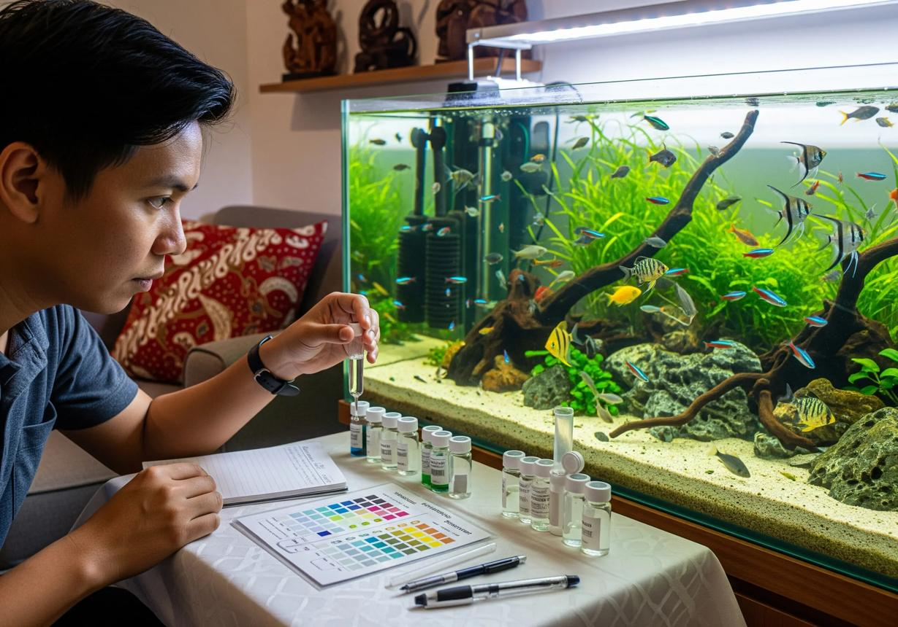
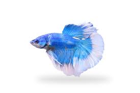
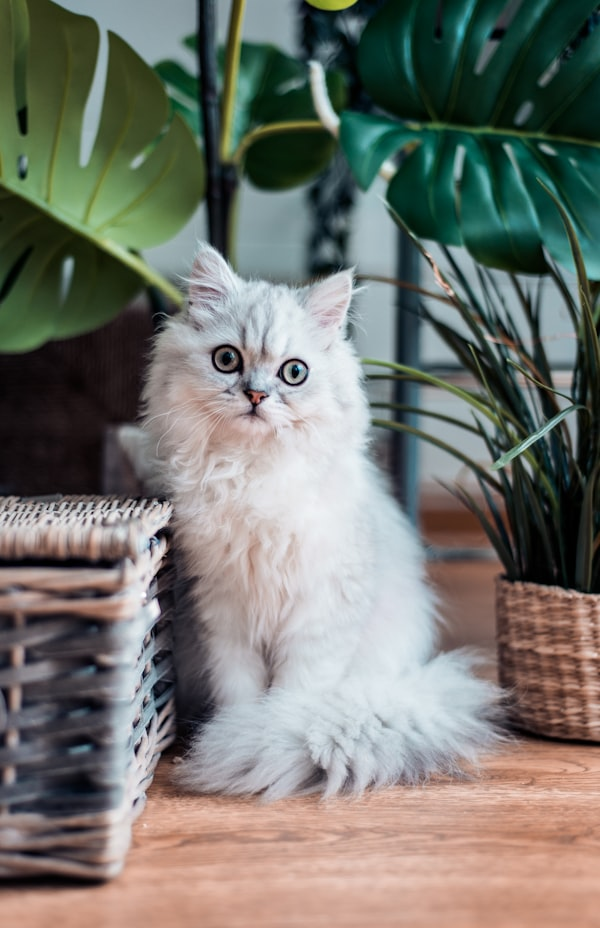
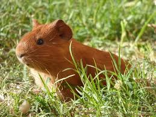
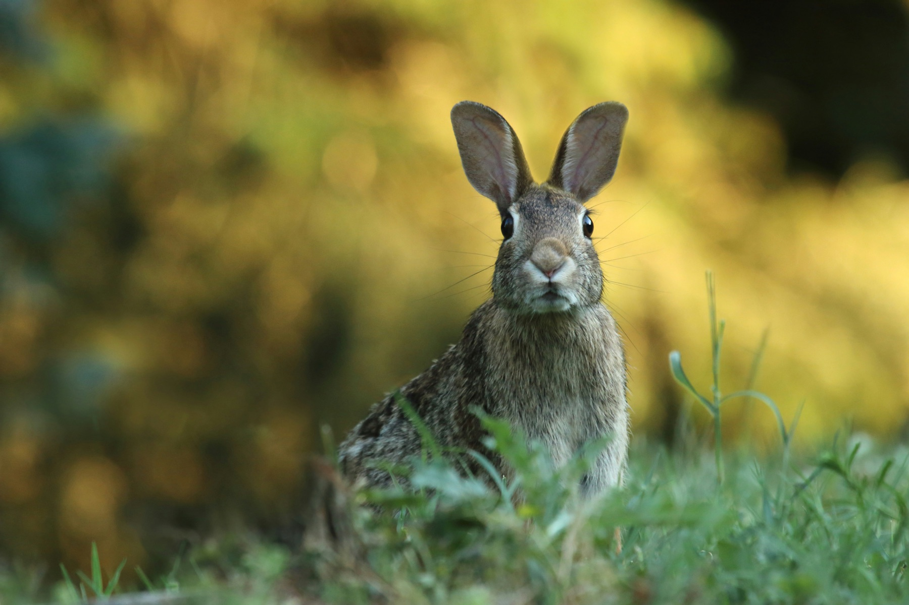
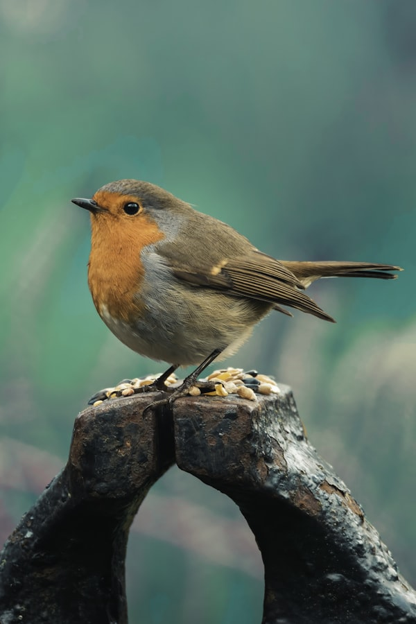
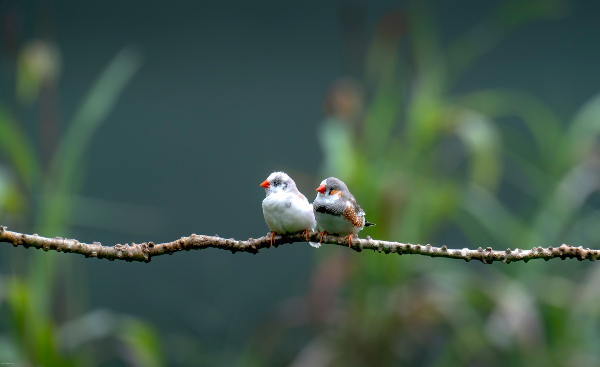
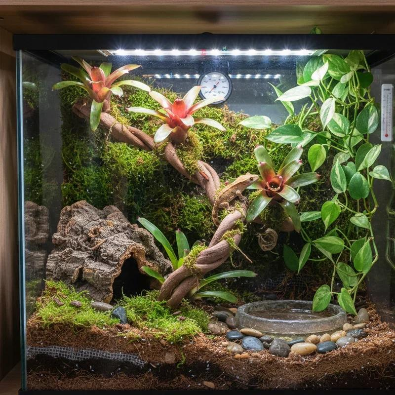

Historias del
mundo exótico
Artículos, guías y curiosidades sobre el cuidado de animales no convencionales, escritos por quienes los viven todos los días.
 Acuarios
Acuarios
Cómo montar tu primer acuario
Todo lo que necesitas para empezar: equipo, peces y el ciclo del nitrógeno explicado paso a paso.
Leer artículo arrow_forward
AcuariosLa química del agua en tu acuario
pH, dureza, amoniaco, nitritos y nitratos: qué son y cómo mantenerlos en niveles seguros.
Leer artículo arrow_forward
PecesPez Betta: todo lo que debes saber
El betta es hermoso pero exigente. Aprende a cuidarlo correctamente y evita los errores más comunes.
Leer artículo arrow_forward
AvesCanarios: canto, salud y bienestar
Por qué canta tu canario, cómo interpretarlo y qué hacer si de repente deja de cantar.
Leer artículo arrow_forward
RoedoresEl hábitat ideal para tu cobaya
Espacio, compañía, temperatura y enriquecimiento ambiental para una cobaya feliz.
Leer artículo arrow_forward
RoedoresConejos exóticos: cuidados básicos
Razas, alimentación, espacio y salud. Lo esencial para que tu conejo viva una vida larga y plena.
Leer artículo arrow_forward
AvesGuía completa de cuidado del periquito
Desde elegir tu primer periquito hasta enseñarle a hablar. La guía más completa en español.
Leer artículo arrow_forward Roedores
Roedores
Hámster: alimentación y ejercicio
Qué comer, cuánto ejercicio necesita y por qué la rueda es indispensable para su salud.
Leer artículo arrow_forward
AvesPinzones: la alimentación perfecta
Semillas, frutas y proteínas. Cómo balancear la dieta de tus pinzones para un plumaje brillante.
Leer artículo arrow_forward
NaturalezaPlantas nativas y animales exóticos
Cómo integrar plantas autóctonas en el hábitat de tus mascotas exóticas de forma segura.
Leer artículo arrow_forward Plantas
Plantas
Suculentas: fáciles de cuidar
Las plantas perfectas para principiantes. Variedades, riego y luz para que florezcan sin esfuerzo.
Leer artículo arrow_forward Terrarios
Terrarios
Terrarios con plantas para reptiles
Diseña un ecosistema vivo y funcional que sea hermoso para ti y saludable para tus reptiles.
Leer artículo arrow_forward